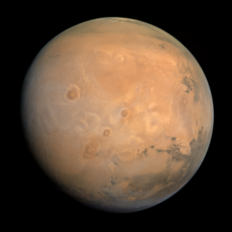
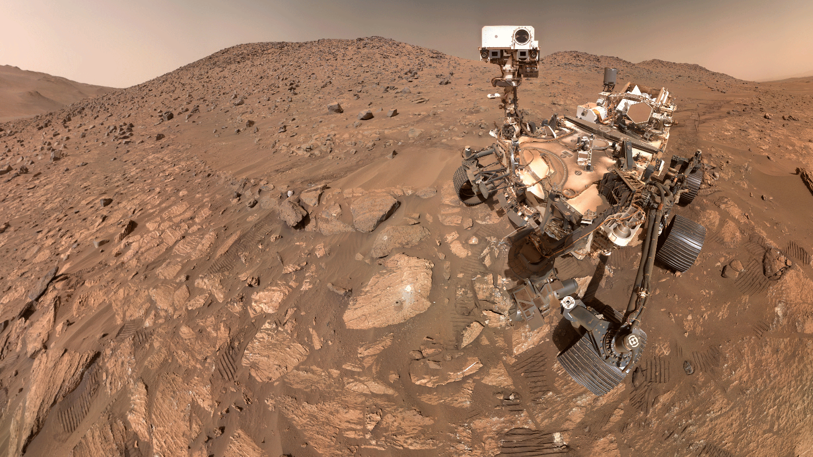

Facts about Mars!
- Mars is the 4th planet from the sun, measuring a distance of about 142 million miles.
- Mars is known as the "red planet" due to the iron on mars rusting, giving it its reddish look.
- According to NASA, the average temperature on Mars is about -80°F - 85°F, this is because Mars' atmosphere is about 100x thinner than Earths and because of its distance from the sun
- A day on Mars is only slightly longer than Earth's, being about 24 hours and 37 minutes


MORE facts about Mars!
- Mars has 2 moons that orbit it called Phobos and Deimos
- Mars contains the largest volcano in the solar system named Olympus Mons, formed through the slow, continuous accumulation of basaltic lava from a hot spot over 1 billion years.
- Scientists have found evidence of ancient rivers and lakes on Mars, indicating that there was once water on the planet.
- Mars is currently the only planet excluding Earth ot have space rovers roaming on it, the most recent one is named Perserverence, landing on February 18th, 2021.
How much would you weigh on Mars?
Your weight on Mars:
Mars' gravity is only 38% of Earth's gravity